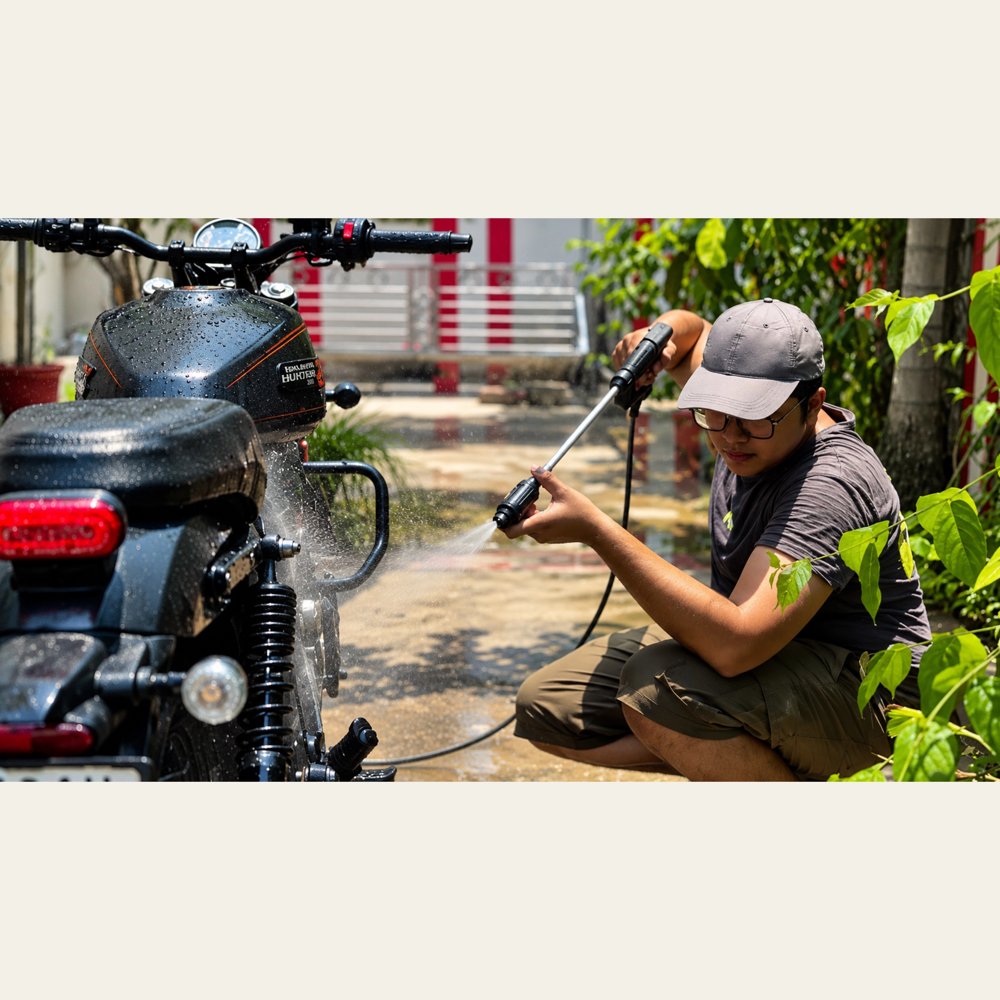
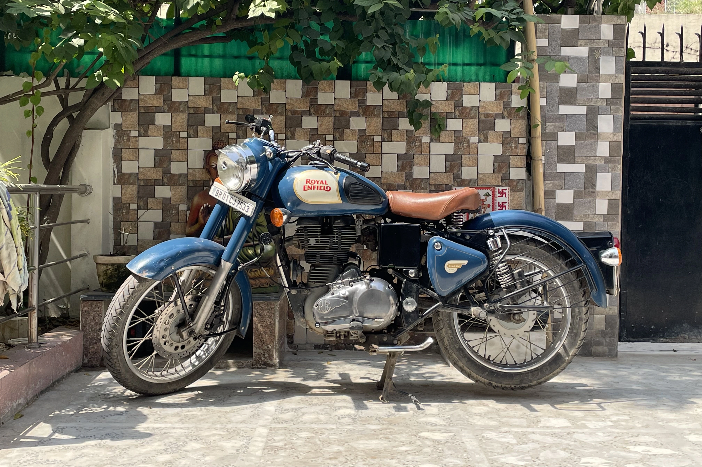
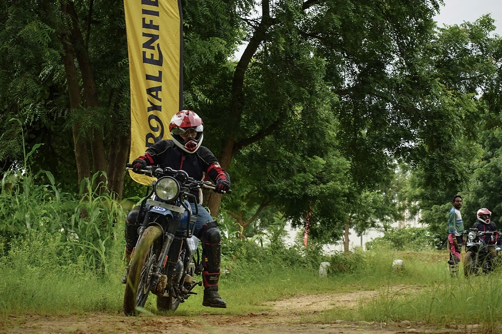

01 / THE PERSON
Not just one thing.
I have never been particularly good at keeping my interests in one lane.
I can spend an afternoon thinking about how a machine is put together, another trying to understand a financial concept, and another getting lost in a completely unrelated subject. The common thread is curiosity: wanting to know how something works, why it exists in the way it does, and what makes it worth understanding.
My background is in computer science, but I have never thought of a degree or a job title as a complete description of a person. Technology is one part of my world. Motorcycles, finance, economics, the systems around us, and the stories behind ordinary things all find their way into it.
I like having room to explore different directions without feeling the need to turn every interest into a career, a qualification, or a public identity.

02 / THE JOURNEY
A few places that made me.
My story began in Sohar, Oman, where I spent the first decade of my life before moving to India.
Growing up in a multicultural expatriate community meant that the world around me was made up of different backgrounds, perspectives, and ways of life. English was the language of my early schooling, and the cars, roads, and everyday movement of the region were part of the environment I grew up in. Looking back, Sohar gave me an early sense that the world was larger than any one place, and that there was always something new to notice.
Oman will always be the starting point of my story. It is where my earliest memories were formed, where my curiosity first took shape, and where the first chapter of my life unfolded. Moving away did not erase that beginning; it gave the rest of the story somewhere to grow from.
India brought a different rhythm. At Delhi Public School in Patna, I continued my education while adjusting to a new country, a different academic environment, and a wider linguistic world. Learning and living across those environments helped me become more adaptable. An early introduction to financial literacy through the Money Smart School Program also planted a seed that would grow into a much deeper interest in banking, financial markets, and economics.
My next chapter took me to Kota, Rajasthan, for an intensive period of academic preparation. It was a very different kind of environment: structured routines, demanding study hours, regular tests, and the experience of measuring your progress against a much wider pool of students. Although my eventual direction changed, the discipline and problem-solving habits I developed there stayed with me.
That change in direction eventually led me to computer science. My undergraduate journey began at Amity University Patna, where I spent the first two years building a foundation in programming, mathematics, and core computing concepts. I then transferred to Amity University Rajasthan in Jaipur to complete the remaining years of my degree.
Moving between campuses meant learning to settle into unfamiliar surroundings more than once. The transitions became part of the education themselves: adapting to new environments, meeting different people, and finding my footing while continuing to work towards the same goal.
The Jaipur years brought together several interests that had been developing alongside my degree. I explored machine learning, data science, and cybersecurity, including a final-year project focused on practical security tools for small businesses. Internships and independent learning gave me opportunities to see how technical ideas translate beyond coursework, while my studies in finance and economics continued in parallel.
When I look at the route from Sohar to Patna, Kota, and Jaipur, it does not feel like one perfectly straight plan. It feels more like a series of chapters, each with its own environment and expectations. Some changed my direction; others strengthened habits I already had. Together, they have shaped how I approach unfamiliar situations and how I think about the possibilities ahead.
Different places, different chapters. The person moving through them is still learning.
03 / THE WAY I THINK
A mind that wanders. A curiosity that stays.
What interests me is often the space between things. How technology changes the way people work. How money moves through an economy. How a design decision affects the way a machine feels. How a small detail can change an entire experience.
I enjoy learning across subjects, following a question further than I initially intended, and connecting ideas that do not always appear related at first. Sometimes that leads to a project. Sometimes it leads to a set of notes, a new perspective, or simply a better question.
I value understanding over appearances. I would rather know what something can actually do, where its limitations are, and why it works than rely on the impression it creates.
That approach carries into the things I build, the subjects I study, the machines I choose, and the way I document what I learn.
There is usually more to something than its first impression.
04 / OUT ON THE ROAD

The road has its own classroom.
Motorcycles are more than a passing interest for me. They are a practical part of everyday life, a reason to explore, and one of the few things that consistently make me want to step away from a screen.
My Harley-Davidson X440 and Royal Enfield Classic 350 represent different sides of that interest. I appreciate the character of a machine, the choices behind its engineering, the way it behaves on the road, and the small details that make ownership personal.
I am interested in riding beyond familiar roads, too. Off-road training introduced me to a different kind of learning: paying attention to terrain, working with the motorcycle rather than against it, and accepting that technique matters more than simply trying harder.
I tend to prefer machines that can be used, understood, maintained, and taken places. Specifications matter, but so does the experience of living with something over time.

05 / OTHER DIRECTIONS
Curiosity, in other directions.
Motorcycles are the most visible expression of my curiosity, but they are far from the only one. I keep returning to technology, financial markets, economics, and the ideas that explain how complicated systems fit together.
Technology & systems
Computer science gave me a way to think about problems, structure, and the systems behind the tools people use. I remain interested in how things are built and how they behave outside a textbook.
Finance & economics
I enjoy understanding markets, financial decisions, incentives, and the forces that shape businesses and economies. The appeal is not just the numbers, but the reasoning and behaviour behind them.
Automobiles & writing
Le Journalisme Automobile is my space for exploring machines and automotive culture through observation, research, and writing. It brings together an interest in engineering with the stories people build around the things they drive.
Explore the journal06 / ELSEWHERE
Different windows into the same person.
I use different spaces for different things. Some are professional, some are creative, and some are simply places to keep up with the things I find interesting.
For now
Still learning. Still exploring.
In no particular hurry to become just one thing.
Back to the beginning